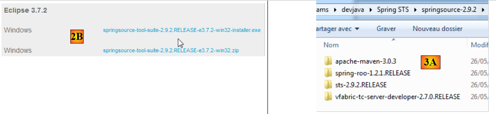
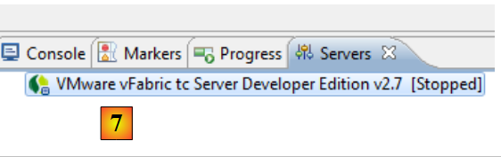
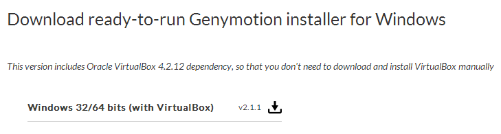
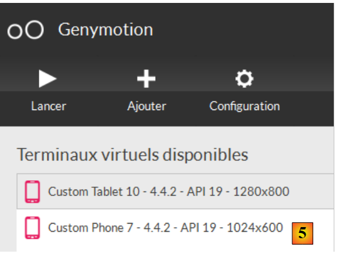

6. Anhänge
Hier wird beschrieben, wie die in diesem Dokument verwendeten Tools auf Windows-7-Rechnern installiert werden.
6.1. Installation von STS (Spring Tool Suite)
Wir werden die SpringSource Tool Suite [http://www.springsource.com/developer/sts] installieren, eine Eclipse-Umgebung, die bereits mit zahlreichen Plugins für das Spring-Framework sowie einer vorinstallierten Maven-Konfiguration ausgestattet ist.
 |
- Rufen Sie die Website der SpringSource Tool Suite auf (STS) [1], um die aktuelle Version von STS [2A] [2B] herunterzuladen,
 |
 |
- Die heruntergeladene Datei ist ein Installationsprogramm, das die Dateistruktur von [3A] und [3B] erstellt. In [4] wird die ausführbare Datei gestartet,
- in [5] wird das Arbeitsfenster von IDE angezeigt, nachdem das Begrüßungsfenster geschlossen wurde. In [6] wird das Fenster mit den Anwendungsservern angezeigt,
 |
- in [7] das Serverfenster. Ein Server ist registriert. Es handelt sich um einen Tomcat-kompatiblen Server VMware.
Die Verwendung von STS im Rahmen der Anwendung wird in Abschnitt 1.3.2 erläutert.
6.2. Installation von [WampServer]
[WampServer] ist ein Softwarepaket zur Entwicklung mit PHP / MySQL / Apache auf einem Windows-Rechner. Wir werden es ausschließlich für SGBD und MySQL verwenden.
 |
- auf der Website von [WampServer] [1] die passende Version auswählen ([2]),
- Die heruntergeladene ausführbare Datei ist ein Installationsprogramm. Während der Installation werden verschiedene Informationen abgefragt. Diese betreffen MySQL nicht. Sie können daher ignoriert werden. Am Ende der Installation wird das Fenster [3] angezeigt. Starten Sie [WampServer],
 |
- in [4], das Symbol von [WampServer] wird in der Taskleiste unten rechts auf dem Bildschirm [4] installiert,
- Wenn man darauf klickt, wird das Menü [5] angezeigt. Es ermöglicht die Verwaltung des Apache-Servers und von SGBD sowie MySQL. Um diesen zu verwalten, verwendet man die Option [PhpPmyAdmin],
- daraufhin erscheint das untenstehende Fenster,

Wir gehen nur kurz auf die Verwendung von [PhpMyAdmin] ein. In Abschnitt 1.3.1 zeigen wir, wie man damit die Datenbank der Anwendung erstellt.
6.3. Installation von [Webstorm]
[WebStorm] (WS) ist die Erweiterung von IDE zu JetBrains zur Entwicklung von Anwendungen mit HTML / CSS / JS. Ich fand es perfekt für die Entwicklung von Angular-Anwendungen. Die Download-Seite lautet [http://www.jetbrains.com/webstorm/download/]. Es handelt sich um eine kostenpflichtige Software, aber eine 30-Tage-Testversion steht zum Download bereit. Es gibt eine kostengünstige Privat- und eine Studentenversion.
Die Verwendung im Rahmen der Anwendung wird in Abschnitt 1.3.3 beschrieben. Um JS-Bibliotheken in einer Anwendung zu installieren, verwendet WS ein Tool namens [bower]. Dieses Tool ist ein Modul von [node.js], einer Sammlung von JS-Bibliotheken. Außerdem werden die JS-Bibliotheken auf einer Git-Website gesucht, wofür ein Git-Client auf dem Rechner erforderlich ist, von dem aus der Download erfolgt.
6.3.1. Installation von [node.js]
Die Download-Seite für [node.js] ist [http://nodejs.org/]. Laden Sie das Installationsprogramm herunter und führen Sie es aus. Mehr ist vorerst nicht zu tun.
6.3.2. Installation des Tools [bower]
Die Installation des Tools [bower], das den Download der JavaScript-Bibliotheken ermöglicht, kann auf verschiedene Arten erfolgen. Wir führen sie über die Konsole durch:
C:\Users\Serge Tahé>npm install -g bower
C:\Users\Serge Tahé\AppData\Roaming\npm\bower -> C:\Users\Serge Tahé\AppData\Roaming\npm\node_modules\bower\bin\bower
bower@1.3.7 C:\Users\Serge Tahé\AppData\Roaming\npm\node_modules\bower
├── stringify-object@0.2.1
├── is-root@0.1.0
├── junk@0.3.0
...
├── insight@0.3.1 (object-assign@0.1.2, async@0.2.10, lodash.debounce@2.4.1, req
uest@2.27.0, configstore@0.2.3, inquirer@0.4.1)
├── mout@0.9.1
└── inquirer@0.5.1 (readline2@0.1.0, mute-stream@0.0.4, through@2.3.4, async@0.8
.0, lodash@2.4.1, cli-color@0.3.2)
- Zeile 1: Der Befehl [node.js], der das Modul [bower] installiert. Damit der Befehl funktioniert, muss sich die ausführbare Datei [npm] im Verzeichnis PATH des Rechners befinden (siehe nachfolgenden Absatz);
6.3.3. Installation von [Git]
Git ist ein Versionsverwaltungssystem für Software. Es gibt eine Windows-Version namens [msysgit], die im Verzeichnis URL [http://msysgit.github.io/] verfügbar ist. Wir werden [msysgit] nicht zur Versionsverwaltung unserer Anwendung verwenden, sondern lediglich zum Herunterladen von Bibliotheken JS, die sich auf Websites vom Typ [https://github.com] befinden, die ein Protokoll mitund das vom Client [msysgit] bereitgestellt wird
Der Installationsassistent bietet verschiedene Schritte an, darunter die folgenden:
 |  |
Bei den übrigen Installationsschritten können Sie die vorgeschlagenen Standardwerte übernehmen.
Sobald die Installation von Git abgeschlossen ist, überprüfen Sie, ob sich die ausführbare Datei im Verzeichnis „PATH“ auf Ihrem Rechner befindet: [Panneau de configuration / Système et sécurité / Système / Paramètres systèmes avancés]:
 |  |
Die Variable PATH sieht wie folgt aus:
D:\Programs\devjava\java\jdk1.7.0\bin;D:\Programs\ActivePerl\Perl64\site\bin;D:\Programs\ActivePerl\Perl64\bin;D:\Programs\sgbd\OracleXE\app\oracle\product\11.2.0\client;D:\Programs\sgbd\OracleXE\app\oracle\product\11.2.0\client\bin;D:\Programs\sgbd\OracleXE\app\oracle\product\11.2.0\server\bin;...;D:\Programs\javascript\node.js\;D:\Programs\utilitaires\Git\cmd
Stellen Sie sicher, dass:
- der Pfad zum Installationsordner von [node.js] vorhanden ist (hier D:\Programme\javascript\node.js);
- der Pfad zur ausführbaren Datei des Git-Clients vorhanden ist (hier D:\Programme\Dienstprogramme\Git\cmd);
6.3.4. Konfiguration von [Webstorm]
Überprüfen wir nun die Konfiguration von [Webstorm]
 |  |
 |
Wählen Sie oben die Option „[1]“ aus. Die Liste der bereits installierten [node.js]-Module wird unter [2] angezeigt. Diese Liste sollte nur die Zeile [3] des Moduls [bower] enthalten, wenn Sie den vorherigen Installationsvorgang befolgt haben.
6.4. Installation eines Emulators für Android
Die mit dem Android-Modul SDK mitgelieferten Emulatoren sind langsam, was von ihrer Nutzung abschreckt. Das Unternehmen [Genymotion] bietet einen wesentlich leistungsfähigeren Emulator an. Dieser ist unter URL [https://cloud.genymotion.com/page/launchpad/download/]
(Februar 2014).
Sie müssen sich registrieren, um eine Version für den privaten Gebrauch zu erhalten. Laden Sie das Produkt [Genymotion] zusammen mit der virtuellen Maschine VirtualBox herunter;

Installieren Sie [Genymotion] und starten Sie es. Laden Sie anschließend ein Image für ein Tablet oder Smartphone herunter:
 |
- Fügen Sie in [1] ein virtuelles Endgerät hinzu;
- wählen Sie in [2] ein oder mehrere Endgeräte zur Installation aus. Sie können die angezeigte Liste verfeinern, indem Sie die gewünschte Android-Version ([3]) sowie das Endgerätemodell ([4]) angeben;
 |
- Sobald der Download abgeschlossen ist, erhalten Sie unter [5] die Liste der virtuellen Endgeräte, die Ihnen zum Testen Ihrer Android-Apps zur Verfügung stehen;
6.5. Installation des Chrome-Plugins [Advanced Rest Client]
In dieser Anleitung wird der Chrome-Browser von Google (http://www.google.fr/intl/fr/chrome/browser/) verwendet. Fügen Sie die Erweiterung [Advanced Rest Client] hinzu. Gehen Sie dazu wie folgt vor:
- Rufen Sie die Website von [Google Web store] (https://chrome.google.com/webstore) mit dem Chrome-Browser auf;
- suchen Sie nach der Anwendung [Advanced Rest Client]:
 |
- Die Anwendung steht dann zum Download bereit:
 |
- Um sie zu erhalten, müssen Sie ein Google-Konto erstellen. [Google Web Store] fordert anschließend eine Bestätigung an: [1]:
 |
- Unter [2] ist die hinzugefügte Erweiterung in der Option [Applications] [3] verfügbar. Diese Option wird auf jedem neuen Tab angezeigt, den Sie im Browser erstellen (CTRL-T).